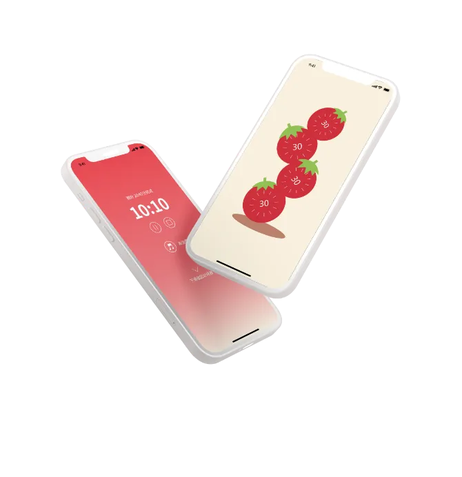
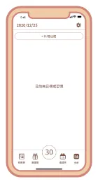
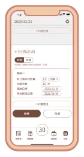
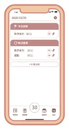
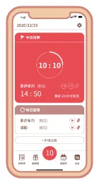
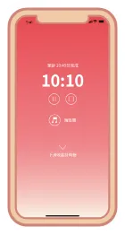
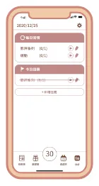
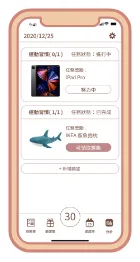
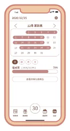

top
Tu Ya Chi
作品
網頁設計
平面&插畫
app設計
履歷
番茄30
幫助專注的app設計
設計
使用工具：illustrator / XD
查看XD demo頁面
查看app介紹

scroll
01
製作背景
介紹
在youtube上有越來越多陪讀的影片，讓觀看者能受影片中正在進行專注事情的影響，進而達到自己不分心的效果，覺得以此產物做發想，增加功能，讓使用者較順利完成心中的目標
目標
分心問題
番茄時鐘，做25分鐘休息5分鐘
減少分心，提升效率
背景音樂，內建大自然聲音
用音樂帶領使用者進入心流世界
無法持之以恆
獎賞制度，讓快樂變成動機
做事不再三分鐘熱度
02
視覺展示
tomato30_logo
字體
思源黑體
Noto Sans Traditional Chinese
系統色
#BF8886
#754C3D
#E84B53
ICON
03
網站頁面展示
番茄30_新增目標



view demo
番茄30_執行&完成



view demo
番茄30_統計&獎勵


view demo